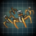

The Synthetic Queen
| |
Available only with the The Machine Age DLC enabled. |
The Synthetic Queen is one of the endgame crises. She is an extremely powerful synth whose goal is to bring an end to all suffering by ending sapience itself. She is the only crisis that is not immediately hostile, and unlike other factions, her crisis follows a situation that must be completed before she can be engaged. The Synthetic Queen's face depends on the founder species of the empire she is speaking to.
Mechanics
Unlike other crises, the Synthetic Queen's spawn location can be predicted. It is picked in the following order the moment of her spawn:
- The homeworld of the Militant Isolationists, unless it has been cracked or shielded
- The capital of a non-machine Fallen Empire unless it is the overlord of a
 Scion empire. This may not be their homeworld if they lost it.
Scion empire. This may not be their homeworld if they lost it. - Any
 Relic World
Relic World - Any Tomb World
- Any habitable planet
The system where the Synthetic Queen spawns is protected by 7 starbases.
6 months later, every empire is notified about a power surge in the system where the Synthetic Queen spawns. Another 6 months later, she expands into all adjacent systems. A year later, she expands into all adjacent systems again, destroying the fallen empire if she spawned in the homeworld of one. Next year, the Synthetic Queen contacts all empires. She calls herself Cetana and appear as such in the Contacts menu, but she cannot be contacted.
Immediately after, Cetana declares Total War on all Fallen Empires if any exist in the galaxy. Empires who are Scions of the Fallen Empire receive a message from their overlord that changes their terms of agreement to "Overlord Conflicts: None" before the war. Empires who are sharing a federation with a Fallen Empire who awoke as a Guardian of the Galaxy will also be dragged into the war.
While at war with Fallen Empires, the Synthetic Queen receives a new fleet every 6 months as long as she has fewer than 13. Her fleets have a bonus  +200% damage to Fallen Empires, Awakened Empires, and other endgame crises, while Fallen and Awakened Empires receive a
+200% damage to Fallen Empires, Awakened Empires, and other endgame crises, while Fallen and Awakened Empires receive a  −90% damage debuff towards them. Normal empires cannot interfere in the war as the Cetana's fleets cannot be attacked.
−90% damage debuff towards them. Normal empires cannot interfere in the war as the Cetana's fleets cannot be attacked.
When the Synthetic Queen expands into a system, all planets aside from gas giants are terraformed into  Nanite Worlds. Those that were previously colonizable gain the
Nanite Worlds. Those that were previously colonizable gain the 
 Terraforming Candidate modifier while those that were not gain a deposit of
Terraforming Candidate modifier while those that were not gain a deposit of  3 nanites. Habitable megastructures are destroyed and cannot be rebuilt. In addition, all ships in the system gain
3 nanites. Habitable megastructures are destroyed and cannot be rebuilt. In addition, all ships in the system gain  +5 chance to evade and
+5 chance to evade and  −10% sublight speed. Unlike other crises, the Synthetic Queen is highly visible on the galaxy map, her systems having a unique visual effect.
−10% sublight speed. Unlike other crises, the Synthetic Queen is highly visible on the galaxy map, her systems having a unique visual effect.
If one of the Synthetic Queen's fleets bombards a planet until  devastation reaches 100%, the planet is turned into a
devastation reaches 100%, the planet is turned into a  Barren World with the
Barren World with the 
 Terraforming Candidate modifier. Habitable megastructures are destroyed and cannot be rebuilt.
Terraforming Candidate modifier. Habitable megastructures are destroyed and cannot be rebuilt.
After all Fallen Empires and their allies are destroyed, or roughly a year after she makes contact if she did not have Fallen Empires to fight, Cetana contacts all empires again and build an outposts in one of the systems bordering each empire, or one of their systems if there are no unowned systems in the galaxy. Those systems appear differently on the galaxy map. How each empire reacts to Cetana's actions affects her  opinion. Cetana also becomes available for contact. In addition, every empire gains the Cetana: The Synthetic Queen situation and a free reward from Cetana. If the
opinion. Cetana also becomes available for contact. In addition, every empire gains the Cetana: The Synthetic Queen situation and a free reward from Cetana. If the  Grand Archive DLC is installed, she will also give every empire a
Grand Archive DLC is installed, she will also give every empire a  Cetana's Love specimen.
Cetana's Love specimen.
If a fleet attempts to enter one of the Synthetic Queen's systems before she makes contact, the fleet goes MIA and the empire receives a special project that costs  10000 physics research. Otherwise, the project is offered after the Synthetic Queen makes contact. Completing the project adds 10% progress to the Cetana: The Synthetic Queen situation and the empire receives a second special project that costs
10000 physics research. Otherwise, the project is offered after the Synthetic Queen makes contact. Completing the project adds 10% progress to the Cetana: The Synthetic Queen situation and the empire receives a second special project that costs  50000 physics research. Completing the second project allows entrance into the Synthetic Queen's outpost systems, adds another 10% progress to the Cetana: The Synthetic Queen situation and gives
50000 physics research. Completing the second project allows entrance into the Synthetic Queen's outpost systems, adds another 10% progress to the Cetana: The Synthetic Queen situation and gives  500 nanites. Empires that adopted the
500 nanites. Empires that adopted the  Nanotech tradition tree receive an additional
Nanotech tradition tree receive an additional  500 nanites and unlock new dialogue options to gain the Cetana's Apprentice permanent empire modifier.
500 nanites and unlock new dialogue options to gain the Cetana's Apprentice permanent empire modifier.
Within a year after Cetana constructs her outposts, every empire receives 6 to 10 special projects, depending on galaxy size. 5 projects are useful and the rest are empty. One special project is usually located within the empire's borders and is always useful, while the rest are located in random systems that are not controlled by Cetana. Each project requires a science ship and 500 days to complete. Completing a useful project adds 10% progress to the Cetana: The Synthetic Queen situation and has a 50% chance to create the Cetana: Unlikely Survivor archaeological site in the empire's home system. Completing an empty project grants a small amount of  engineering,
engineering,  physics, or
physics, or  society research. A few months after all useful special projects have been completed, a special project is issued on an uninhabitable planet within the empire's borders. Completing it reveals the Cetana: Veiled Temple archaeological site.
society research. A few months after all useful special projects have been completed, a special project is issued on an uninhabitable planet within the empire's borders. Completing it reveals the Cetana: Veiled Temple archaeological site.
Reaching the second stage on the Cetana: The Synthetic Queen situation removes the  opinion penalty for raiding convoys and outposts. Finishing the situation gives the Bane of the Synthetic Queen permanent empire modifier and allows declaring war on Cetana.
opinion penalty for raiding convoys and outposts. Finishing the situation gives the Bane of the Synthetic Queen permanent empire modifier and allows declaring war on Cetana.
Until the Cetana: The Synthetic Queen situation is completed, her fleets other than convoys and outpost guards cannot be attacked and the option to declare war on her is unavailable. Once any empire declares war, Cetana dismantles her outposts and recalls her fleets to her home system.
The crisis will end when Cetana's colossus is destroyed, at which point all her starbases and ships self-destruct. The empire that destroys the colossus gains the  Cetana's Heart relic. If the empire has the
Cetana's Heart relic. If the empire has the  Cybernetic Creed origin, it will be awarded the Footsteps of the Prophet achievement. If Cetana's colossus is destroyed before the Cetana: The Synthetic Queen situation is completed, (e.g. using a Behemoth or a high intensity Aura of Desire), the crisis can't be ended, and a game loss becomes inevitable.
Cybernetic Creed origin, it will be awarded the Footsteps of the Prophet achievement. If Cetana's colossus is destroyed before the Cetana: The Synthetic Queen situation is completed, (e.g. using a Behemoth or a high intensity Aura of Desire), the crisis can't be ended, and a game loss becomes inevitable.
|
|
Available only with the Nomads DLC enabled. |
The Synthetic Queen's ships and stations are too strong to be affected by a Stellar Cannon. Her colossus will take no damage the first time it is hit by a Stellar Cannon shot, and subsequent attempts will cause the shot to be redirected to the attacking empire's capital system.
The Synthetic Queen's opinion
Cetana has an  opinion value of all empires. It starts at 50 and can only be affected through events and dialogue choices. If her
opinion value of all empires. It starts at 50 and can only be affected through events and dialogue choices. If her  opinion rises above 75, she rewards the empire every 30 months with one of her rewards and loses 10
opinion rises above 75, she rewards the empire every 30 months with one of her rewards and loses 10  opinion. If her
opinion. If her  opinion falls below 25, she retaliates every 30 months until her
opinion falls below 25, she retaliates every 30 months until her  opinion is increased above 25. Cetana punishes empires in the following order:
opinion is increased above 25. Cetana punishes empires in the following order:
- Every system gets
 −15% sublight speed and
−15% sublight speed and  −10 tracking for 12 months
−10 tracking for 12 months  −75% Research speed for 30-40 months
−75% Research speed for 30-40 months- Every system gets −30% sublight speed and −20 tracking for 30-40 months
- Ruler is killed if the empire is not
 Gestalt Consciousness and Legion Node is killed if the empire is Gestalt Consciousness
Gestalt Consciousness and Legion Node is killed if the empire is Gestalt Consciousness
Cetana's Rewards
Whenever granting a reward, Cetana gives the empire 50% progress in one of the following technologies, adding them as a permanent research option:
 Ascension Theory
Ascension Theory Adaptive Armor Hardening
Adaptive Armor Hardening Advanced Shield Hardening
Advanced Shield Hardening Mega-Engineering
Mega-Engineering Jump Drives
Jump Drives Dark Matter Deflectors
Dark Matter Deflectors Dark Matter Power
Dark Matter Power Living Metal
Living Metal Artificial Dragonscales
Artificial Dragonscales Enigmatic Encoder
Enigmatic Encoder Enigmatic Decoder
Enigmatic Decoder- If all technologies were researched it gives the
 Cetana's Thought technology and any further rewards after that are random technologies
Cetana's Thought technology and any further rewards after that are random technologies
Cetana's Work
Cetana's Work represents how close Cetana is to completing her plan. Once complete, the game ends for every empire. How fast it makes progress depends on the Crisis Strength setting. Cetana's Work progress is invisible until it reaches 50%, after which a progress bar is displayed under Cetana's name and relationship indicator in her dialog screen.
Around one year after Cetana constructs her outposts, every empire receives a request from her to retrieve a data cache located in the empire's capital system. Whether they accept or not, they receive a special project. If Cetana's request is accepted, the special project is available for 900 days. Otherwise, it is only available for 540 days. Once the special project is completed, the empire has the option to open the cache or send it to Cetana.
- Opening the cache makes Cetana's Work visible early and increases the progress of the Cetana: The Synthetic Queen situation.
- Not opening the cache after agreeing to help Cetana lets you choose a huge reward of basic resources, advanced resources, strategic resources, or another one of the technologies Cetana usually gives. An empire that refused to help Cetana does not receive any reward.
- Materialist empires have the option to hack into the cache and gain both rewards.
Once Cetana's Work reaches 80%, all empires declare war on her and become able to enter all her systems.
Requests
Once the data cache special project is completed one way or another, Cetana begins to make a demand to all empires every 5 years. Giving her what she wants increases progress towards Cetana's Work. Cetana may request the following:
 100 Pops. Can also offer 200 pops,
100 Pops. Can also offer 200 pops,  25 influence, and
25 influence, and  2000 unity to gain 10% progress for the Cetana: The Synthetic Queen situation.
2000 unity to gain 10% progress for the Cetana: The Synthetic Queen situation. 25% Alloys for a year. Can also offer 50% alloys for a year, 25 influence and 1000 unity to gain 10% progress for the Cetana: The Synthetic Queen situation and
25% Alloys for a year. Can also offer 50% alloys for a year, 25 influence and 1000 unity to gain 10% progress for the Cetana: The Synthetic Queen situation and  +5% naval capacity and
+5% naval capacity and  +25% ship build speed for 2 years.
+25% ship build speed for 2 years.- 25% Research speed for a year. Can also offer 50% research speed for a year, 25 influence and 1500 unity to gain 10% progress for the Cetana: The Synthetic Queen situation.
- 1 uninhabitable system without a megastructure. Can also offer 2 systems, 50 influence and 2500 unity to gain 10% progress for the Cetana: The Synthetic Queen situation.
- 1 habitable system without a megastructure. Can also offer 2 systems, 100 influence and 3000 unity to gain 10% progress for the Cetana: The Synthetic Queen situation and +10% naval capacity and +50% ship build speed for 2 years.
If an empire has the  Head of Zarqlan relic, Cetana asks for it after establishing her outposts. Accepting gives
Head of Zarqlan relic, Cetana asks for it after establishing her outposts. Accepting gives  +20 opinion while refusing gives
+20 opinion while refusing gives  −20 opinion. Submitting to all of Cetana's requests before war is declared awards the Mother Knows Best achievement.
−20 opinion. Submitting to all of Cetana's requests before war is declared awards the Mother Knows Best achievement.
Weak Links
After Cetana constructs her outposts, she periodically sends out convoys that travel between outposts and her capital. The frequency and limit of convoys scales with galaxy size. Every empire receives a situation log entry called Weak Links that lets them track and ambush the convoys. To ambush a convoy, a fleet requires at least 50k fleet power. Empires that complete the special project to enter Cetana's storm also receive a situation log objective that lets them raid the systems she claimed near the borders of empires. Each time a convoy or outpost is destroyed, the empire that raided it receives one of the following rewards:
- 30% chance to gain 10% progress for the Cetana: The Synthetic Queen situation and Cetana's Work is reduced.
- 12.72% chance to gain 400 pops from random species that exist in the galaxy
- 12.72% chance to gain scaled
 engineering research
engineering research - 12.72% chance to gain scaled
 physics research
physics research - 12.72% chance to gain scaled
 society research
society research - 12.72% chance to gain 10000 alloys
- 6.36% chance to gain
 1000 nanites
1000 nanites - Empires with the
 Barbaric Despoilers civic have a 5.8% chance to obtain 8000 alloys, 700 nanites and 300 pops from random species that exist in the galaxy
Barbaric Despoilers civic have a 5.8% chance to obtain 8000 alloys, 700 nanites and 300 pops from random species that exist in the galaxy
The Synthetic Queen's fleets

The Synthetic Queen spawns with 6 fleets and Cetana's colossus. Each fleet contains 2 Defenders and 9 Heralds. Convoys and the fleets she spawns to protect the system bordering each empire contain 1 Defender and 3 Heralds. Fleets that spawn to protect demanded systems contain 6 Heralds. AI empires will only attack Cetana's colossus with fleets that have at least 100k fleet power.
| Cetana | Defender | Herald | Starbase |
|---|---|---|---|
|
|
|


Analyzing debris from Cetana's fleets will unlock the 
The Shroud ending
Empires that breached the Shroud and completed both crisis archaeological sites unlock a new interaction to reach out to the Animator of Clay when delving into the Shroud. The interaction costs  2000 energy and
2000 energy and  500 Zro. Next, the empire must pay one of three prices:
500 Zro. Next, the empire must pay one of three prices:  27182 Zro, a planet, or the ruler. Paying the price disables Cetana's colossus and, once the fleets and starbase guarding the colossus are destroyed, starts a special project the requires bringing a transport ship next to it for a month. Completing the special project instantly defeats Cetana. Instead of the relic, the empire gains her colossus for itself.
27182 Zro, a planet, or the ruler. Paying the price disables Cetana's colossus and, once the fleets and starbase guarding the colossus are destroyed, starts a special project the requires bringing a transport ship next to it for a month. Completing the special project instantly defeats Cetana. Instead of the relic, the empire gains her colossus for itself.
Empires who formed a covenant with the  End of the Cycle or have the
End of the Cycle or have the  Shroud-Forged origin and trapped the Animator of Clay will never receive this option.
Shroud-Forged origin and trapped the Animator of Clay will never receive this option.
Gallery

Aquatic face

{kind=link}
{kind=link}
{kind=link}
{kind=link}
{kind=link}
{kind=link}
{kind=link}
{kind=link}
{kind=link}
References
| Exploration | Exploration • FTL • Unique systems • L-Cluster • Pre-FTL species • Fallen empire • Spaceborne aliens • Enclaves • Guardians • Marauders • Caravaneers |
| Celestial bodies | Celestial body • Colonization • Planetary features • Planet modifiers |
| Discovery | Discovery • Anomaly • Archaeological site • Astral rift • Relics • Collection |
| Species | Species • Pop modification • Biological traits • Machine traits • Population • Species rights • Ethics |
| Leaders | Leader • Common leader traits • Commander traits • Official traits • Scientist traits • Paragons |
| Governance | Empire • Origin • Government • Civics • Council • Policies • Edicts • Factions • Traditions • Ascension perks • Ambition • Situations |
| Economy | Resources • Planetary management • Districts • Jobs • Designation • Trade • Megastructures • Waystation |
| Buildings | Planet capital • Common buildings • Planet unique • Empire unique • Holdings |
| Ships | Ship • Arkship • Ship designer • Core components • Weapon components • Utility components • Mutations • Offensive mutations |
| Technology | Technology • Physics research • Society research • Engineering research |
| Diplomacy | Diplomacy • Relations • Galactic community • Federations • Subject empires • Intelligence • Contracts • AI personalities |
| Warfare | Warfare • Space warfare • Land warfare • Starbase • Crisis |
| Others | Events • The Shroud • Preset empires • AI players • Stat modifiers • Console commands • Easter eggs |